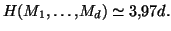
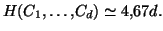

Mesure de l'imperfection d'un système cryptographique
 Il faut avoir compris cette page avant d'envisager de consulter celle-ci.
Il faut avoir compris cette page avant d'envisager de consulter celle-ci.
Nous avons vu que la théorie de l'information permet de mesurer la qualité d'un système cryptographique grâce à la quantité H(M|C). Elle va même plus loin, et permet de répondre à cette question : à partir de quand notre système n'est plus sûr?
Prenons l'exemple de la cryptographie par sustitution mono-alphabétique. On sait bien que ce système de cryptographie ne résiste pas à l'analyse des fréquences. Mais combien faut-il de lettres au cryptanalyste pour reconstituer la clé? La théorie de l'information de Shannon permet de donner une estimation de ce résultat. Optons pour la modélisation suivante : le message est constitué d'une succession de lettres$M_1\dots M_n$, la clé K est une permutation au hasard de l'alphabet à 26 lettres. En particulier, $H(K)=\log(26!)$. Le chiffré est une succession de lettres $C_1\dots C_n$. On définit la distance d'unicité comme le plus petit entier d tel que :- On a déjà vu que H(K)=log(26!).
- On peut calculer empiriquement une valeur de H(M1...Md) en se basant sur une analyse statistique de nombreux textes écrits en français (les détails sont expliqués dans cette page). On constate alors que 
- L'évaluation de H(C1,…,Cd) est plus délicate. Si on suppose que n'importe toutes les suites de lettres $L_1\dots L_d$ ont une probabilité égale d'apparition comme message chiffré (en faisant prendre à la clé toutes les valeurs possibles), alors on aurait $H(C_1,\dots, C_d)=d\log(26)$. Cette hypothèse est malheureusement inexacte. Si chaque lettre a une probabilité égale d'apparition, il est très improbable qu'un message chiffré comporte la suite de lettres AAAA : il faudrait qu'un texte clair, dont le chiffré est issu, contienne lui aussi 4 fois de suite la même lettre. Là encore, on cherche une estimation de $H(C_1,\dots C_d)$ par une étude statistique - voir cette applet -. On constate alors que  Remarquons que l'entropie des messages chiffrés est supérieure à l'entropie des messages clairs. C'est tout à fait normal : le chiffrement accentue le désordre!
Consulter aussi